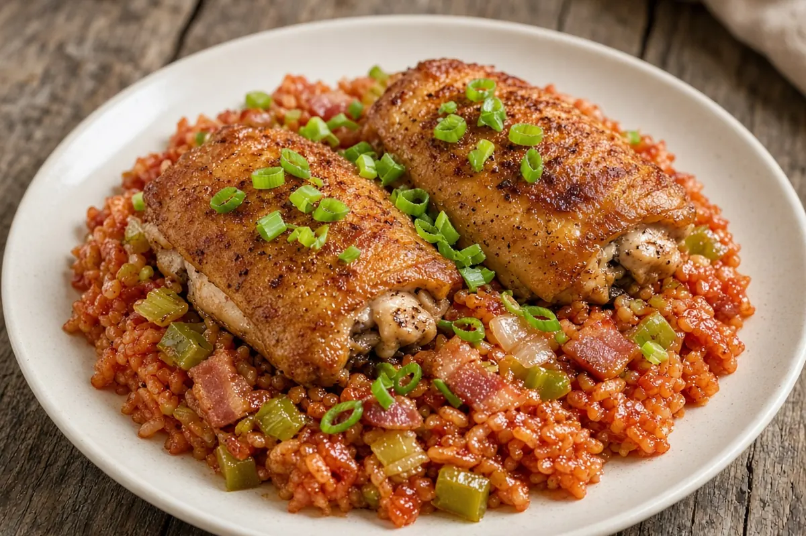

Savannah Red Rice with Crispy Chicken Thighs
Classic Lowcountry red rice baked with bacon, the trinity, and tomatoes, topped with crackly oven-roasted skin-on chicken thighs. A double batch, so Wednesday is leftovers.

8 servings
By
Yield: 8 servings
Prep:
Cook:
Total:
Difficulty: Easy
Ingredients
- 4 lb bone-in skin-on chicken thighs (about 10)
- 2 tsp kosher salt
- 1 tsp smoked paprika
- 1 tsp garlic powder
- 1/2 tsp black pepper
- 8 slices thick-cut bacon, chopped
- 1 large onion, diced
- 1 green bell pepper, diced
- 2 stalks celery, diced
- 3 cloves garlic, minced
- 1 (6 oz) can tomato paste
- 1 (28 oz) can crushed tomatoes
- 2 cups chicken bone broth
- 3 cups long-grain white rice
- 1 tsp Cajun seasoning
- 2 tsp sugar
- 1/4 tsp cayenne pepper
- 4 green onions, sliced
Instructions
- Heat the oven to 375°F. Season the chicken thighs with 1 tsp of the salt, the smoked paprika, garlic powder, and black pepper.
- Cook the bacon in a large heavy oven-safe pot with a lid over medium heat until crisp, 7 minutes. Add the onion, bell pepper, and celery and cook 5 minutes, then the garlic and tomato paste for 2 minutes.
- Stir in the crushed tomatoes, chicken bone broth, rice, Cajun seasoning, sugar, cayenne, and the rest of the salt and bring to a simmer, 3 minutes.
- Cover tightly and bake on the lower rack 50 minutes without stirring. At the same time, put the chicken thighs skin side up on a rack set in a sheet pan on the upper rack and roast 50 minutes.
- Take the rice out and leave it covered. Raise the oven to 450°F and roast the chicken 8 more minutes, until the skin is crackly and the chicken reads 185°F.
- Fluff the rice, top with the chicken and green onions, and serve.
Notes: This is a double batch: save half for Wednesday's leftovers. Reheat the chicken on a sheet pan at 400°F for 15 minutes to re-crisp the skin, and the rice covered with a splash of broth. Red rice is traditionally baked so the grains stay separate; do not lift the lid early.